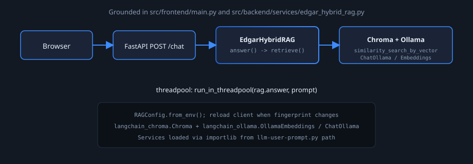
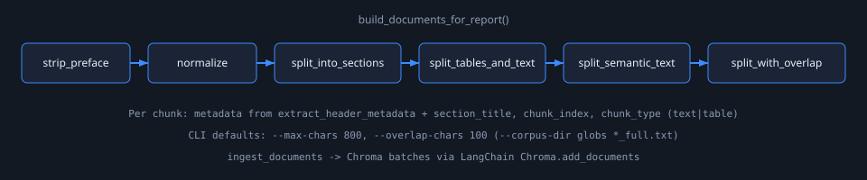
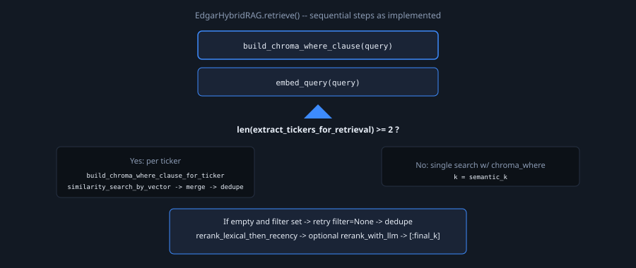
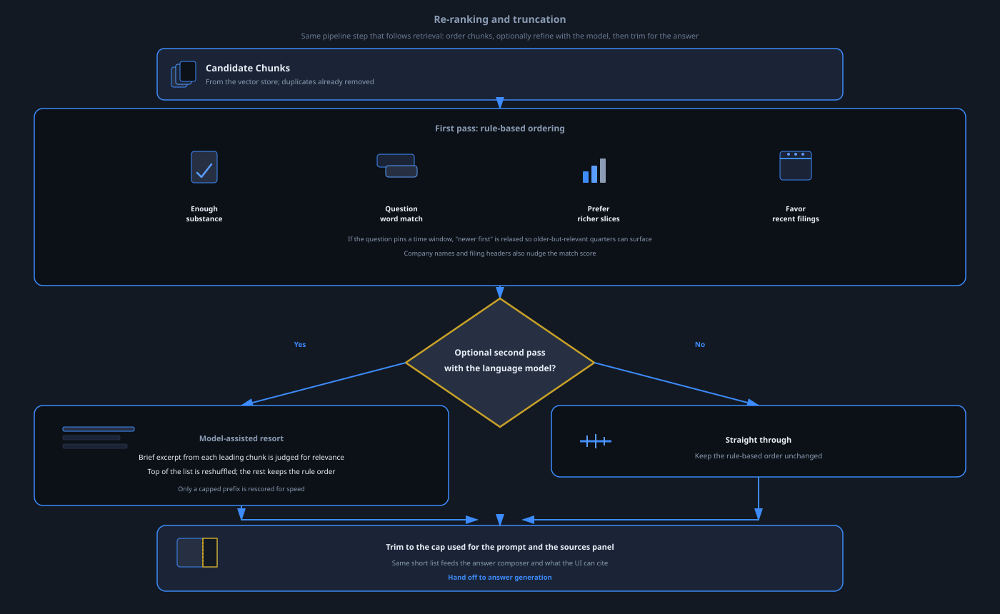
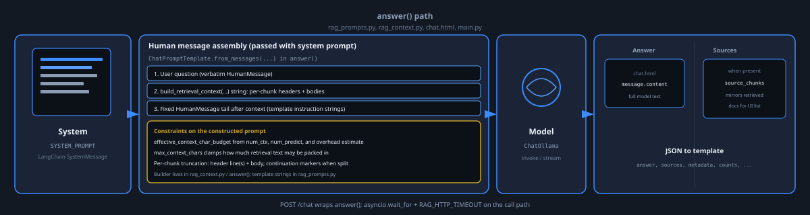

Retrieval-augmented Q&A over chunked filing text: metadata-filtered Chroma search,
lexical reranking, Ollama generation (see src/).
ELIZA Technical Assessment — 3-tier Chunking, Ollama embeddings, Chroma vector database, hybrid retrieval, & Ollama generation.
Slide headers mirror repository concerns; content cites concrete modules and behavior only.
edgar_corpus .txt layout, manifest.json, and patterns leveraged for metadata + retrieval.EdgarHybridRAG.chunk_and_embed.py pipeline into Chroma.where, embed query, multi-issuer vs single path, fallbacks, dedupe (diagram-retrieval.svg / edgar_hybrid_rag.py).rerank_with_llm, final_k slice (diagram-reranking.svg / rag_reranking.py).diagram-generation.svg / rag_prompts.py, LangChain template, chat.html).logs/test_questions.md.Slides follow headers in this deck only; no claims beyond referenced files.
Observed structure under edgar_corpus/ (with manifest.json) is stable enough to drive
metadata on every chunk and hybrid retrieval in EdgarHybridRAG—not ad hoc parsing per question at runtime beyond query interpretation.
TICKER_10K|10Q[_YYYYQn]_YYYY-MM-DD_full.txt encodes symbol, form, optional fiscal quarter label, and filing date. When the header block is incomplete, ingestion falls back to this pattern so Chroma still gets consistent ticker / form_type / dates for filtering.
Company:, Ticker:, Filing Type:, Filing Date:, Report Period:, Quarter:, CIK:, Source:, URL: appear before a row of = characters. Those fields map directly into document metadata used for source labels and Chroma where-style filters at query time (edgar_query_patterns.py aligns user text to the same stored strings, e.g. 10-K vs 10-Q variants).
UNITED STATES SECURITIES AND EXCHANGE COMMISSION, FORM 10-Q / 10-K) and narrative sections with Part / Item headings and pipe-separated financial tables. That predictable mix motivates treating tabular pipe text as first-class context in prompts and lexical scoring—not random noise in a generic PDF dump.
On-disk layout & header parsing: src/backend/data_processing/chunk_and_embed.py (extract_header_metadata, filename fallback). Runtime filters & multi-issuer behavior: edgar_hybrid_rag.py, edgar_query_patterns.py. Default ingest path: repo edgar_corpus/ (override --corpus-dir).
Browser submits POST /chat; FastAPI runs EdgarHybridRAG.answer inside run_in_threadpool.

main.py resolves llm-user-prompt.py and imports via importlib; inserts services dir on sys.path.dataclasses.asdict(RAGConfig.from_env()); new EdgarHybridRAG when fingerprint changes.Chroma with host/port + collection; OllamaEmbeddings + ChatOllama with num_predict, num_ctx, timeouts.Source: src/frontend/main.py, src/backend/services/edgar_hybrid_rag.py, src/backend/services/llm-user-prompt.py
build_documents_for_report() builds LangChain Document rows before embedding.

split_into_sections splits on HEADING_RE (PART / ITEM lines).split_tables_and_text tags blocks as table or text using pipe/heuristic line detection.split_semantic_text groups paragraphs; subheadings from SUBHEADING_RE start new units.split_with_overlap enforces max_chars / overlap_chars (CLI defaults 800 / 100).ingest_documents batches embeddings through Ollama and Chroma.add_documents; optional skip by deterministic chunk id.Source: src/backend/data_processing/chunk_and_embed.py
Full branch logic through deduplicated semantic_docs; the next slide covers ordering and final_k truncation in the same retrieve() call.

Source: edgar_hybrid_rag.py (retrieve), edgar_query_patterns.py — details on the diagram; env: RAG_SEMANTIC_K, RAG_MULTI_ENTITY_PER_TICKER_SEMANTIC_K.
final_k
Continuation of retrieve() after Chroma returns candidates: deterministic re-order, then optional cross-encoder-style LLM scoring on the list prefix, then slice for context packing.

Source: rag_reranking.py, edgar_hybrid_rag.py (rerank_with_llm, parse_llm_score) — env: RAG_USE_RERANKER, RAG_RERANK_TOP_N, RAG_FINAL_K, RAG_DISABLE_RECENCY_BOOST, …
Flow below matches the bullets: static system prompt, capped context assembly, model call, JSON to the chat template. On avg. ~15 seconds to display answer in UI.

SYSTEM_PROMPT from rag_prompts.py (static filing/tabular guidance per source).ChatPromptTemplate.from_messages in answer() — user question, build_retrieval_context(...), fixed strings after context.effective_context_char_budget / max_context_chars from num_ctx, num_predict, overhead; per-chunk header + body truncation.answer, sources, source_chunks, metadata_filters_used, retrieval_where_clause, counts, period_pinned_in_query.chat.html renders full message.content; Sources when source_chunks exist; asyncio.wait_for + RAG_HTTP_TIMEOUT.Source: rag_prompts.py, edgar_hybrid_rag.py, rag_context.py, src/frontend/templates/chat.html, main.py
Structured from logs/test_questions.md (prompt inventory). Each branch is a scenario class; nested lines pair a prompt theme with the observed system behavior noted in that log—not benchmark scores.
Source catalog: logs/test_questions.md. Related implementation: edgar_hybrid_rag.py, edgar_query_patterns.py, rag_reranking.py, chat.html.
ragas would help quantify the performance of the system. Such code would be added to evaluation.py.num_predict caps completion tokens; answers truncate when budget exhausted mid-stream. Larger models would allow for longer generation lengths even when user questions are very long..txt/ files. Their inclusion would allow system to answer any user questions about them by leveraging multi-modal LLM's.
Thank you — Reference implementation under src/backend/*/ and src/frontend/.
Local runtime instructions are present in the root README.md file.